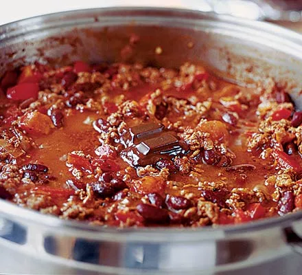

Chilli

Description
A hearty, smokey, healthy chilli recipe with succulent meat and tender kidney beans
If you're a lover of paprika, you have to try this out.
Ingredients
- grams of diced steak
- a can of chopped tomatoes
- kidney beans
- paprika, chilli powder, cumin
- 2 garlic cloves
- 1 diced onion
- 1 red pepper
- 1 cube of beef stock
Steps
- oil to your pan and bring it to heat gently
- Once the oil is ready, add the sliced onion and cook until soft
- Add the garlic, red pepper and spices, cook for 5 minutes further
- Add the diced steak and cook until browned
- Make 400mls of beef stock and add it along with a can of chopped tomatoes
- Bring to the boil and stir, add a lid and let simmer for 20 minutes
- Add kidney beans, stir and simmer for 10 minutes
- Remove from the heat and let the flavours settle with the lid on for 10 minutes<0/li>
- Serve up alongside rice and enjoy!